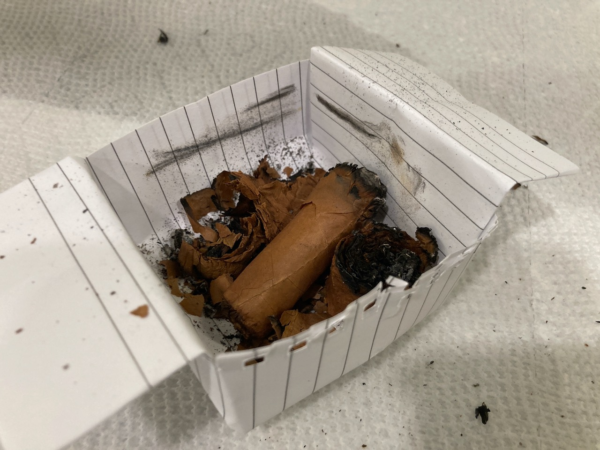

Cigar Log: Montecristo No. 5
I will start by saying this is a smoke that I was really looking forward to. It is a really good smoke, but I definitely need to give it a retry because I messed this one up bad and it was completely my fault. 😭
This is another one beautiful cigar. The band is slightly damaged because Canada has this law on cigar of covering the band with another plain tag. They accidentally glued the military tag onto the actual beautiful band! It damaged the original band when I tried to take it off! It's so frustrating. 😤 😞
It is a small cigar, but it's dense and very heavily packed! The first few draws were really good, but a bit tight. The cigar was smooth, coffee, creamy. It's a really lovely cigar at least at the start. I didn't taste much from mid to end because I was having trouble keeping the cigar lit, but that's totally my fault. 😭
The cigar could not stay lit properly because it was too moist. I put it in a ziploc bag with a wet tissue for a night before I smoke it. I just thought it was too dry. The tissue was not touching the cigar, but the cigar was able to absorbed all the water from the environment. The tissue was dried when I checked it, and my cigar was over-humidified. I didn't realize until I light it up. 😦
I was originally just going to cut off the burned part with my guillotine cutter so I could potentially dried the rest off and smoke it another time. The problem was: I couldn't find the cutter anywhere!! I got mad at myself and tried trimming the top with my old cigar knife. Well, that didn't work out and completely ruined the cigar. 😖 😭

There goes my $40. Literally throw my money in the trash 🗑. I managed to take a few puffs from each section that I cut off though. It was very creamy and sweet throughout the body from my very limited number of puffs. It reminds me a lot of H. Upmann Half Corona. I will definitely have to give this one another try in a good condition.
My lessons: Anger is not the solution to anything and never smoke indoor unprepared. I really need to find a better place for me to sit down and enjoy the cigar at ease. 😢
Anyways, that's my sad story for this cigar. Thank you for reading till the end. Please consider supporting this website so I can share more of my cigar journey. Have a wonderful day! 🙏